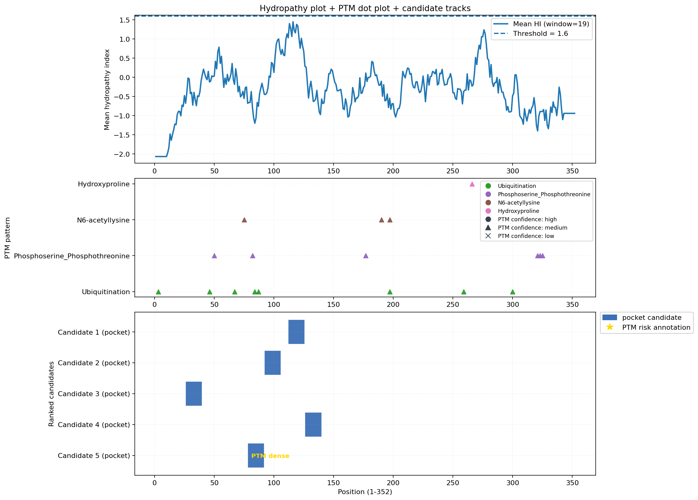

Site4Drug
Prediction Report
Ranked Candidates
| Rank | ID | Mode | Peptide | Position | Confidence | Score | Source | Flags | Reason |
|---|---|---|---|---|---|---|---|---|---|
| 1 | L_C0005 | LTSTVQLITQLMPF | 112-125 | High | 0.82 | llm_self_consistency_vote | motif-overlap, self_consistency_votes_2_of_3, span-repaired-from-peptide | High hydrophobicity (0.571) and no PTM overlap support strong pocket formation; overlaps PS50011 motif but no direct PTM interference. | |
| 2 | L_C0003 | EAYVMASVDNPHVC | 92-105 | High | 0.75 | llm_self_consistency_vote | motif-overlap, self_consistency_votes_3_of_3, span-repaired-from-peptide | Moderate hydrophobicity (0.5) and no PTM overlap; overlaps PS50011 motif, which may constrain flexibility. | |
| 3 | L_C0001 | GEAPNQALLRILKE | 26-39 | Moderate | 0.70 | llm_self_consistency_vote | self_consistency_votes_3_of_3, span-repaired-from-peptide | No PTM or motif overlap and moderate hydrophobicity (0.5); low polar fraction may limit solvation. | |
| 4 | L_C0004 | GCLLDYVREHKDNI | 126-139 | Moderate | 0.60 | llm_self_consistency_vote | fuzzy_consensus_clustered, motif-overlap, self_consistency_votes_3_of_3, span-repaired-from-peptide | Low hydrophobicity (0.286) and motif-overlap reduce pocket plausibility despite no PTM interference. | |
| 5 | L_C0002 | REATSPKANKEILD | 78-91 | Low | 0.35 | llm_self_consistency_vote | PTM-clustered, PTM-dense, PTM-overlap, motif-overlap, self_consistency_votes_3_of_3, span-repaired-from-peptide | PTM-dense region with overlapping phospho/ubiquitin sites at positions 82, 84, 87 disrupts pocket integrity. |
Agent Conclusions
- BioAgent: Topology/PTM screen prioritizes biologically accessible regions and downranks constrained segments.
- ChemAgent: PTM and motif overlaps modulate pocket candidacy, favoring hydrophobic, low-PTM regions.
- RiskAgent: Risk review penalizes candidates with stacked flags and highlights uncertainty hotspots.
- DecisionAgent: ok
PTM + Motif Summary
PTM summary: {'total_sites': 18, 'counts_by_type': {'Ubiquitination': 8, 'Phosphoserine_Phosphothreonine': 6, 'N6-acetyllysine': 3, 'Hydroxyproline': 1}, 'n_masked_positions': 127}
Motif summary: {'total_hits': 3, 'counts_by_motif': {'PS50011': 1, 'PS00107': 1, 'PS00109': 1}}
Raw API Outputs
MusiteDeep: status=ok, requests=1, artifact=musitedeep_raw.json
MusiteDeep preview: {"querySeq":"MKKGHHHHHHDYDIPTTENLYFQGSGEAPNQALLRILKETEFKKIKVLGSGAFGTVYKGLWIPEGEKVKIPVAIKELREATSPKANKEILDEAYVMASVDNPHVCRLLGICLTSTVQLITQLMPFGCLLDYVREHKDNIGSQYLLNWCVQIAKGMNYLEDRRLVHRDLAARNVLVKTPQHVKITDFGLAKLLGAEEKEYHAEGGKVP...<truncated>
ScanProsite: status=remote_ok, n_hits=3, artifact=scanprosite_raw.xml
ScanProsite preview: <scanprosite_response>
<anti-timeout></anti-timeout>
<matchset xmlns="urn:expasy:scanprosite" xmlns:xsi="http://www.w3.org/2001/XMLSchema-instance" xsi:schemaLocation="urn:expasy:scanprosite http://expasy.org/tools/sca...<truncated>
Hydropathy + PTM + Candidate Tracks

Legend: candidate bars use emerald green=epitope, steel blue=pocket, slate gray=other; gold annotation marks PTM risk labels (PTM overlap or PTM dense); PTM dot markers encode confidence (o=high, ^=medium, x=low).